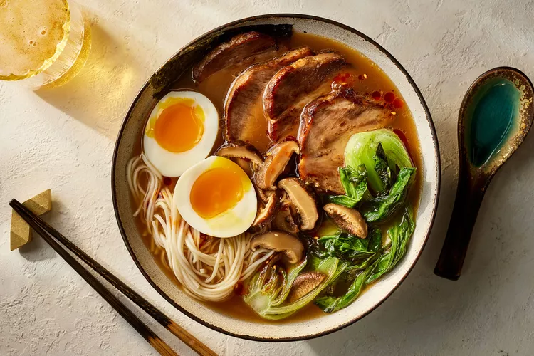

Ramen

Ingredients
Stock
- 2 pounds chicken bones or 1 whole chicken carcass
- 2 pounds pork neck bones or pork ribs
- 1 (1- to 2-pound) pork trotter, halved lengthwise
- 1 bunch scallions, trimmed and cut in half crosswise
- 1 (6-inch) piece fresh ginger, unpeeled and cut into 1/4-inch slices (about 3/4 cup)
- 4 to 6 quarts cold water
- 1 (8-by-4-inch) kombu sheet
Chashu Pork
- 3 tablespoons canola oil
- 1 (1 1/2-pounds) boneless pork shoulder (Boston butt)
- 3 garlic cloves, peeled and smashed
- 1 bunch scallions, trimmed and cut in half crosswise
- 1 (2-inch) piecefresh ginger, unpeeled and sliced 1/4-inch thick (about 1/4 cup)
- 1 de árbol chile
- 1/2 cup mirin
- 1/2 cup sake
- 6 tablespoons shoyu
- 2 tablespoons rice wine vinegar
- 2 tablespoons light brown sugar
Pickled Mushrooms
- 2 ounces dried shiitake mushrooms, sliced (about 1 1/4 cups)
- 1/2 cup rice wine vinegar
- 1/4 cup shoyu
- 1/4 cup water
- 1 (1-inch) piece fresh ginger, peeled and grated on a Microplane grater (about 1 teaspoon)
Ramen
- 4 to 6 (about 3-ounce)bundles dried ramen noodles
- 1 cup shoyu
- 1/4 cup mirin
- 1 tablespoon rice wine vinegar
- 1 1/2 teaspoons toasted sesame oil
- Kosher salt, to taste
- 3 tablespoons canola oil, divided, plus more as needed
- 4 baby bok choy (about 1 1/2 ounces each), halved lengthwise
- 1/4 cup water
- 4 to 6 soft-cooked eggs
- 4 to 6 small (about 4-by-3-inch) nori sheets
- Chile oil (optional)